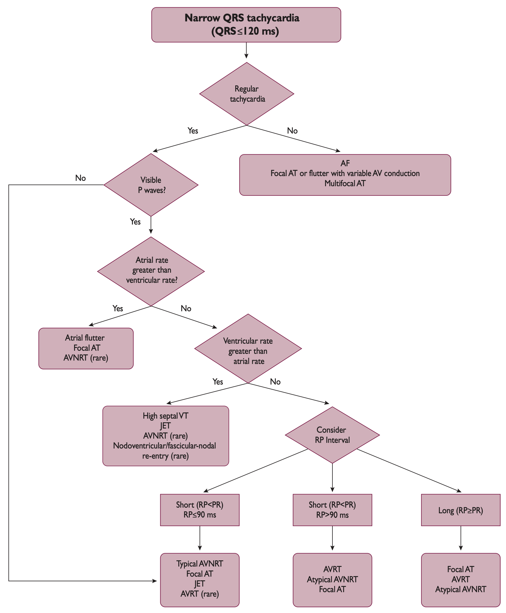
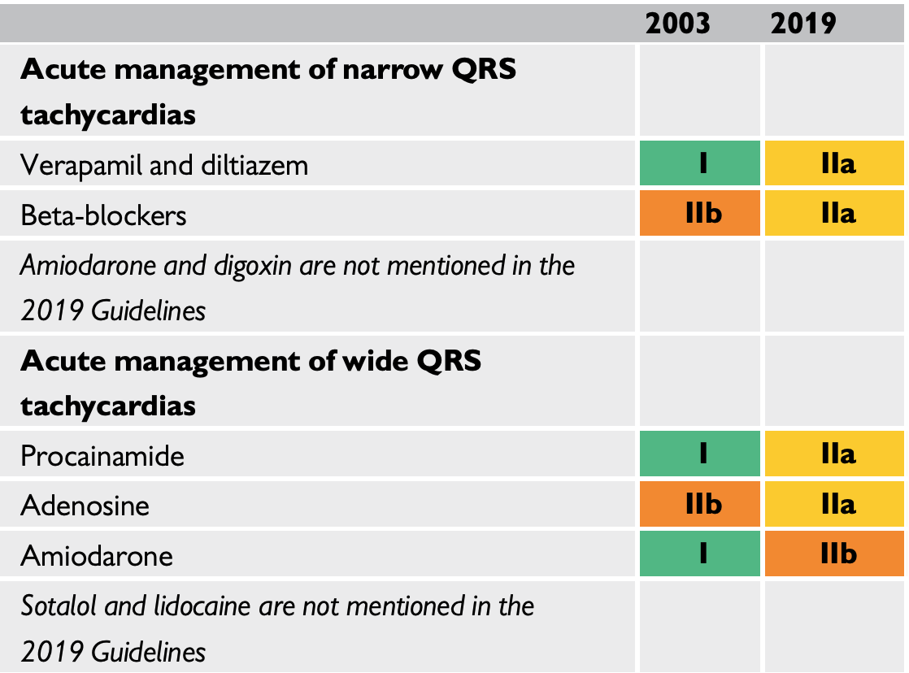
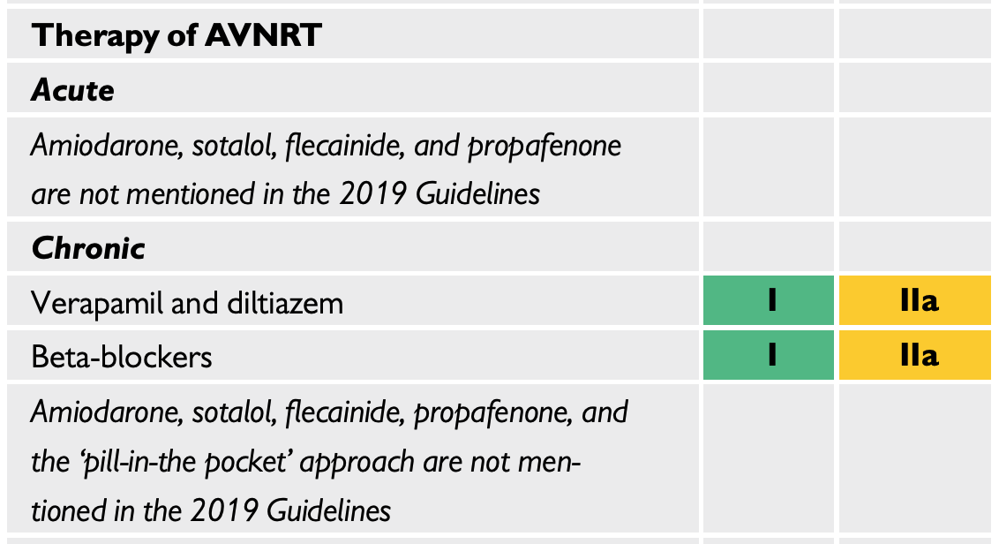
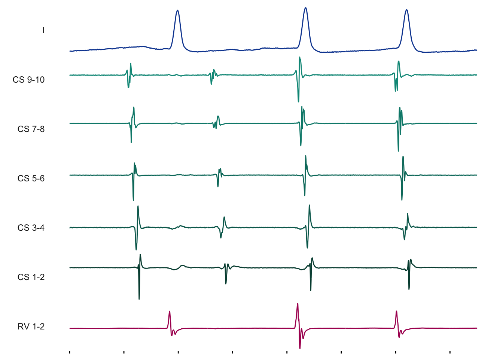

── Attaching packages ─────────────────────────────────────── tidyverse 1.3.2 ──
✔ ggplot2 3.4.0 ✔ purrr 1.0.1
✔ tibble 3.1.8 ✔ dplyr 1.0.10
✔ tidyr 1.2.1 ✔ stringr 1.5.0
✔ readr 2.1.3 ✔ forcats 0.5.2
── Conflicts ────────────────────────────────────────── tidyverse_conflicts() ──
✖ dplyr::filter() masks stats::filter()
✖ dplyr::lag() masks stats::lag()
Loading required package: data.table
Attaching package: 'data.table'
The following objects are masked from 'package:dplyr':
between, first, last
The following object is masked from 'package:purrr':
transpose
Loading required package: vctrs
Attaching package: 'vctrs'
The following object is masked from 'package:dplyr':
data_frame
The following object is masked from 'package:tibble':
data_frame
Attaching package: 'rhythm'
The following object is masked from 'package:grDevices':
cm
Linking to GEOS 3.10.2, GDAL 3.4.2, PROJ 8.2.1; sf_use_s2() is TRUE
Attaching package: 'scales'
The following object is masked from 'package:purrr':
discard
The following object is masked from 'package:readr':
col_factorIntroduction to AVNRT
Clinical Electrophysiology Conference
When you come to a fork in the road, take it.
. . .
~ Yogi Berra
Objectives
- Understand the relevant anatomy and physiology that allow for AVNRT
- Know how to diagnose typical AVNRT from …
- Clinical history
- Surface ECG
- Intracardiac electrograms
- Understand the underlying mechanisms behind treatment strategies
Outline
- Introduction to AVNRT
- Non-invasive diagnosis
- Non-invasive treatment approach
- Relevant anatomy and physiology
- Intracardiac electrograms
| Abbr. | Abbreviation |
|---|---|
| AAD | antiarrhythmia drugs |
| AH | atrial-His |
| AP | accessory pathway |
| AVNRT | AV nodal reentrant tachycardia |
| CS | coronary sinus |
| HPS | His-Purkinje system |
| HB | His bundle |
| HA | His-atrial interval |
| HV | His-ventricular interval |
| ST | sinus tachycardia |
| SVT | supraventricular tachycardia |
| TCL | tachycardia cycle length |
Definition
- SVT implies involvement of ≥ 1 structure above bifurcation of the His bundle (HB).
- AVNRT is usually a narrow-complex tachycardia that uses the AV node, and functional/anatomical pathways (slow/fast)
Remains unclear if there are anatomical correlates with the regions of slow versus fast conduction.
Requirements
To initiate and maintain a re-entrant rhythm:
- ≥ 2 functionally/anatomically distinct pathways that join proximally and distally to form a closed circuit of conduction
- unidirectional block in one of those potential pathways
- slow conduction down the unblocked pathway, allowing the previous pathway to recover
Sina qua non of reentrant arrhythmia is the ability to reproducibly intiate the tachycardia by timed extrastimuli
Diagnosis
- Most common paroxysmal supraventricular tachycardia (1)
- Approximately 50% of SVT cases in adults are from an AVNRT mechanism (2)
- Woman are affected twice as frequently as men (3)
- Most patients are between 18-40 years of age (3)
- Typical AVNRT accounts for 90% of cases
Porter et al 2004, HRS (4)
What’s the rhythm?
A differential for a regular SVT?
Narrow QRS
- AVNRT
- AT
- Orthodromic AVRT due to an accessory pathway
- AFL with fixed AV conduction
- SANRT
- High septal VT
- ST
Wide QRS
- AVNRT or AT with aberrancy
- AVNRT with a bystander accessory pathway
- Antidromic AVRT due to an accessory pathway
- SVT with wider QRS due to electrolyte/AAD therapies
Does the history matter?
- Sudden onset and termination (often positional) more often re-entrant
- Abortive measures such as drinking iced water
- Dizziness and hypotension occur more commonly in short RP tachycardias
- Polyuria/diuresis during tachycardia or at termination due to increased ANP secretion (5)
What next?
- Physical exam?
- 24-48 hour Holter?
- 2-4 weeks of cardiac event monitoring?
- Exercise testing?
- Echocardiogram?
- EP testing?
https://youtu.be/csVn_kvdeBM
Does the exam matter?
- Neck pounding manifests with continuous pulsing cannon A waves, as the RA contracts against a closed tricuspid valve, described as the frog sign (6)
- Does not occur in orthodromic AVRT, as longer VA interval separates the chamber contractions
- 7-fold increase in AVNRT over other SVT with this symptom

Treatment
Guidelines


2019 ESC SVT Guidelines (7)
Vagal Maneuvers
Valsalva maneuver
- Also called Flack’s test, where intrapleural pressure is raised to 40 mm Hg (expiration against closed airway)
- Bradycardia effect seen within first 10-15 seconds
Carotid sinus massage
- Holding constant pressure (not a “massage”) for 5-10 seconds
- Increases pressure in carotid body, firing baroreceptors
- SNS afferent response leads to PNS efferents via vagus (right = SA, left = AV)
- Responses…
- cardioinhibitory with ≥ 3s pause
- vasodepressor is drop of ≥ 50 mm Hg in pressure
- mixed
Adenosine
- an endogenous purine nuceloside, binding to cardiac adenosine A1 receptors
- dose-related prolongation of AV conduction at AH interval
90% success rate:
- 6 mg bolus
- 12 mg bolus
- 18 mg bolus
Repeat dosing after 1 minute (30 seconds for complete effect). Better efficacy with “single syringe strategy” (8)
Right Atrial Anatomy
ra_grey
ra_grey +
geom_sf(data = chambers, fill = red[5], alpha = 0.5) +
geom_sf(data = septum, fill = red[5], alpha = 0.5) +
geom_sf_label(data = chambers, aes(label = label)) +
geom_sf_label(data = septum, aes(label = label))Warning: Removed 2 rows containing missing values (`geom_label()`).
ra_grey +
geom_sf(data = chambers, fill = red[5], alpha = 0.2) +
geom_sf(data = septum, fill = red[5], alpha = 0.2) +
geom_sf(data = vessels, fill = blue[5], alpha = 0.5) +
geom_sf_label(data = vessels, aes(label = label), nudge_y = 1)
ra_grey +
geom_sf(data = chambers, fill = red[5], alpha = 0.2) +
geom_sf(data = septum, fill = red[5], alpha = 0.2) +
geom_sf(data = vessels, fill = blue[5], alpha = 0.2) +
geom_sf(data = projections, fill = red[2], alpha = 0.5) +
geom_sf_label(data = projections, aes(label = label))
ra_grey +
geom_sf(data = chambers, fill = red[5], alpha = 0.2) +
geom_sf(data = septum, fill = red[5], alpha = 0.2) +
geom_sf(data = vessels, fill = blue[5], alpha = 0.2) +
geom_sf(data = projections, fill = red[2], alpha = 0.2) +
geom_sf(data = valves, fill = grey[9], alpha = 0.9) +
geom_sf_label(data = valves, aes(label = label))
ra_grey +
geom_sf(data = chambers, fill = red[5], alpha = 0.2) +
geom_sf(data = septum, fill = red[5], alpha = 0.2) +
geom_sf(data = vessels, fill = blue[5], alpha = 0.2) +
geom_sf(data = projections, fill = red[2], alpha = 0.2) +
geom_sf(data = valves, fill = grey[9], alpha = 0.2) +
geom_sf(data = conduction, fill = orange[2], alpha = 0.5) +
geom_sf_label(data = conduction[conduction$component == "whole", ], aes(label = label), nudge_y = c(1.5, 3))
ra_grey +
geom_sf(data = chambers, fill = red[5], alpha = 0.2) +
geom_sf(data = septum, fill = red[5], alpha = 0.2) +
geom_sf(data = vessels, fill = blue[5], alpha = 0.2) +
geom_sf(data = projections, fill = red[2], alpha = 0.2) +
geom_sf(data = valves, fill = grey[9], alpha = 0.2) +
geom_sf(data = conduction, fill = orange[1], alpha = 0.2) +
geom_sf(data = subset(conduction, structure == "av_node" & component != "whole"), fill = orange[1], alpha = 0.9) +
geom_sf_label(data = subset(conduction, structure == "av_node" & component != "whole" & type == "nodal"), aes(label = label), nudge_x = c(-3.5, 3), nudge_y = c(0, 0)) +
geom_sf_label(data = subset(conduction, structure == "av_node" & component != "whole" & type == "extension"), aes(label = label), nudge_x = c(-4, 5.5), nudge_y = c(-0.5, -2.5))
ra_grey +
geom_sf(data = chambers, fill = red[5], alpha = 0.2) +
geom_sf(data = septum, fill = red[5], alpha = 0.2) +
geom_sf(data = vessels, fill = blue[5], alpha = 0.2) +
geom_sf(data = projections, fill = red[2], alpha = 0.2) +
geom_sf(data = valves, fill = grey[9], alpha = 0.2) +
geom_sf(data = conduction, fill = orange[1], alpha = 0.2) +
geom_sf(data = filter(reference, type == "anatomy"), fill = orange[2], alpha = 0.5) +
geom_sf_label(data = filter(reference, type == "anatomy"), aes(label = label)) 
Fork in the Road
Sinus Rhythm
- Normal P and R axis
- RR = 900
- PP = 900
- QRS = 80
- P = 120
- PR = 160
- QT = 440
SVT
- Suspected retro-grade P
- RR = 350
- QRS = 70
- PR = 300
- RP = 40
ra_colors <-
ra_grey +
geom_sf(data = chambers, fill = red[5], alpha = 0.1) +
geom_sf(data = septum, fill = red[5], alpha = 0.1) +
geom_sf(data = vessels, fill = blue[5], alpha = 0.1) +
geom_sf(data = projections, fill = red[2], alpha = 0.1) +
geom_sf(data = valves, fill = grey[9], alpha = 0.1) +
geom_sf(data = conduction, fill = orange[1], alpha = 0.3)
ra_colors
ra_colors +
geom_sf(data = pathways, fill = "white", color = NA, alpha = 0.8) +
geom_sf_label(data = filter(pathways, type == "pathway"), aes(label = label), nudge_y = 1)Warning: Removed 12 rows containing missing values (`geom_label()`).
nsr <-
ra_grey +
geom_sf(data = pathways, fill = "white", color = NA_character_) +
geom_sf(data = filter(pathways, structure == "atrial_extension"),
fill = orange[3]) +
geom_sf(data = filter(pathways, structure == "upper_common"),
fill = orange[3]) +
geom_sf(
data = filter(
pathways,
(structure == "fast" & component == "proximal") |
(structure == "bridge" & component == "proximal")
),
fill = orange[3]
) +
geom_sf(
data = filter(
pathways,
(structure == "fast" & component == "middle") |
(structure == "slow" & component == "proximal")
),
fill = orange[3]
) +
geom_sf(
data = filter(
pathways,
(structure == "fast" & component == "distal") |
(structure == "bridge" & component == "distal")
),
fill = orange[3]
) +
geom_sf(
data = filter(pathways, structure == "lower_common"),
fill = orange[3]
) +
geom_sf(
data = filter(
pathways,
(structure == "slow" & component == "distal") |
(structure == "slow" & component == "middle")
),
fill = c(red[2], orange[3])
)
nsr +
transition_layers(
keep_layers = c(Inf, Inf, rep(2, 7)),
layer_length = 1,
from_blank = FALSE
) +
enter_fade() +
exit_fade(alpha = 0)
nsr_egm <- read_lspro(file.path(loc, "tmf_data/lsp-single-pvc.txt"))
ggm(data = nsr_egm,
channels = c("I", "CS", "RV", "HIS D", "HIS M", "HIS P"),
time_frame = c(0.25, 0.7)) 
tach_start <- read_lspro(file.path(loc, "tmf_data/lsp-tach-initiation.txt"))
ggm(data = tach_start,
channels = c("I", "CS", "RV", "HIS d", "HIS m")) |>
add_intervals(channel = "I")
ggm(data = tach_start,
channels = c("I", "CS", "RV", "HIS d", "HIS m"),
time_frame = c(2.6, 2.9))
ggm(data = tach_start,
channels = c("I", "CS", "RV", "HIS d", "HIS m"),
time_frame = c(0.6, 1.0))
ggm(data = tach_start,
channels = c("I", "CS", "RV", "HIS d", "HIS m"),
time_frame = c(1.5, 3.0))
avnrt <-
ra_grey +
geom_sf(data = pathways, fill = "white", color = NA_character_) +
geom_sf(
data = filter(pathways,
structure == "slow" & component == "middle"),
fill = orange[3]
) +
geom_sf(
data = filter(
pathways,
(structure == "slow" & component == "distal") |
(structure == "bridge" & component == "distal")
),
fill = orange[3]
) +
geom_sf(
data = filter(pathways, structure == "lower_common"),
fill = orange[3]
) +
geom_sf(
data = filter(pathways,
structure == "fast" & component == "distal"),
fill = red[2]
) +
geom_sf(
data = filter(pathways,
structure == "fast" & component == "middle"),
fill = red[2]
) +
geom_sf(
data = filter(
pathways,
(structure == "fast" & component == "proximal") |
(structure == "bridge" & component == "proximal")
),
fill = red[2]
) +
geom_sf(
data = filter(
pathways,
(structure == "upper_common" & component == "distal") |
(structure == "upper_common" & component == "upper_fast")
),
fill = red[2]
) +
geom_sf(
data = filter(pathways,
structure == "upper_common" & component == "upper_slow"),
fill = orange[2]
) +
geom_sf(
data = filter(
pathways,
(structure == "atrial_extension") |
(structure == "slow" & component == "proximal")
),
fill = c(red[2], orange[3], rep(red[2], 4))
)
avnrt +
transition_layers(
keep_layers = c(Inf, Inf, rep(1, 9)),
layer_length = 1,
from_blank = FALSE
) +
enter_fade() +
exit_fade(alpha = 0)
decremental_800 <-
read_lspro(file.path(loc, "tmf_data/lsp-cs-pacing-800.txt"))
ggm(decremental_800, channels = c("I", "CS", "HIS")) |>
add_intervals(channel = "CS 9-10")
decremental_400 <-
read_lspro(file.path(loc, "tmf_data/lsp-cs-pace-decremental-400ms-jump.txt"))
ggm(decremental_400, channels = c("I", "CS", "HIS")) |>
add_intervals(channel = "CS 9-10")
References
1. Kwaku KF, Josephson ME. Typical AVNRT - An update on mechanisms and therapy. 2002;6:414–421. Available at: https://link.springer.com/article/10.1023/A:1021140509804.
2. Issa ZF, Miller JM, Zipes DP. Clinical arrhythmology and electrophysiology: A companion to braunwald’s heart disease. Elsevier; 2018:1–752. Available at: https://linkinghub.elsevier.com/retrieve/pii/C20140032935.
3. Goyal R, Zivin A, Souza J, et al. Comparison of the ages of tachycardia onset in patients with atrioventricular nodal reentrant tachycardia and accessory pathway-mediated tachycardia. American Heart Journal 1996;132:765–767. Available at: https://pubmed.ncbi.nlm.nih.gov/8831363/.
4. Porter MJ, Morton JB, Denman R, et al. Influence of age and gender on the mechanism of supraventricular tachycardia. Heart Rhythm 2004;1:393–396.
5. Abe H, Nagatomo T, Kobayashi H, Miura Y, Masaru Araki AK, Nakashima Y. Neurohumoral and hemodynamic mechanisms of diuresis during atrioventricular nodal reentrant tachycardia. PACE - Pacing and Clinical Electrophysiology 1997;20:2783–2788. Available at: https://pubmed.ncbi.nlm.nih.gov/9392809/.
6. Sakhuja R, Smith LM, Tseng ZH, et al. Test characteristics of neck fullness and witnessed neck pulsations in the diagnosis of typical AV nodal reentrant tachycardia. Clinical Cardiology 2009;32:E13. Available at: /pmc/articles/mid/NIHMS319317/ /pmc/articles/mid/NIHMS319317/?report=abstract https://www.ncbi.nlm.nih.gov/pmc/articles/PMC3200305/.
7. Brugada J, Katritsis DG, Arbelo E, et al. 2019 ESC Guidelines for themanagement of patients with supraventricular tachycardia. European Heart Journal 2020;41:655–720. Available at: www.escardio.org/guidelines.
8. Kotruchin P, Chaiyakhan I on, Kamonsri P, et al. Comparison between the double-syringe and the single-syringe techniques of adenosine administration for terminating supraventricular tachycardia: A pilot, randomized controlled trial. Clinical Cardiology 2022;45:583–589.